VELA
Restaurant Interior
The Vela Restaurant and Bar space emerges from the interplay between stars, constellations, and sky and boat-making techniques of the past. The ceiling form emanates a sky-like veil, altering its lighting and appearance based on the time of day. The motion of 'carving' and 'shaping' guides the grounded elements such as the bars, inspired by the ships and voyageurs. Such a space curves around its inhabitants and envelops the visitors in a warm and cave-like interior.
CONTEXT
Internship at PARTISANS
LOCATION
King Street East,
Unit 6, Toronto
SOFTWARE + TOOLS
Rhinoceros3D, Grasshopper, Python, Revit, Illustrator, Photoshop, Enscape
COLLABORATORS
Ivan Vasliyv, Jonathan Friedman
ROLES
Design iterations, construction documentation (IFC, Revisions, Patio approvals), fabrication rationalization
Read about it on Architectural Record and on Designlines .
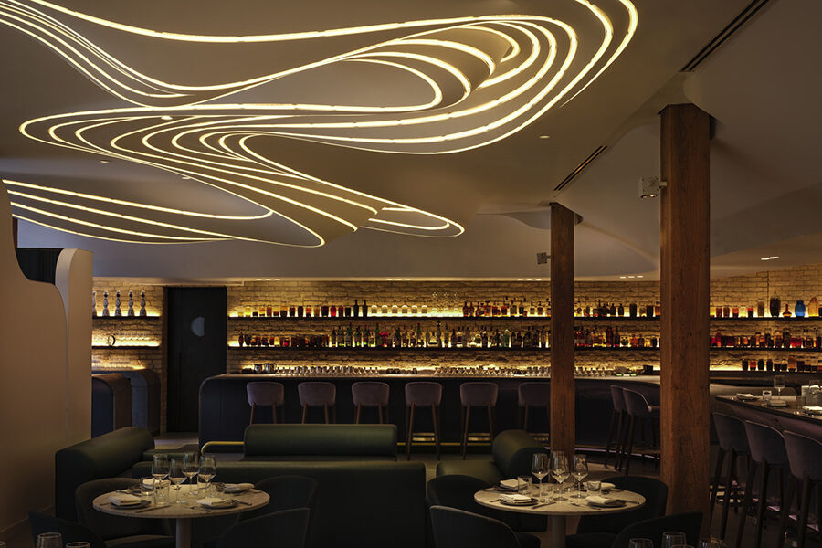
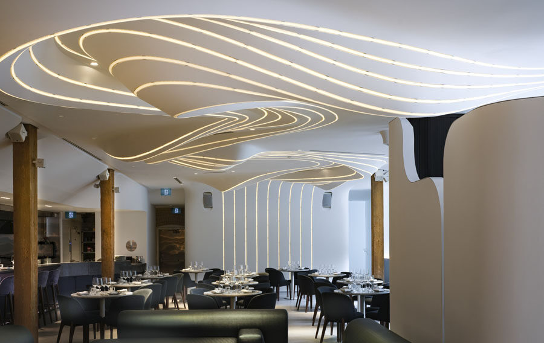
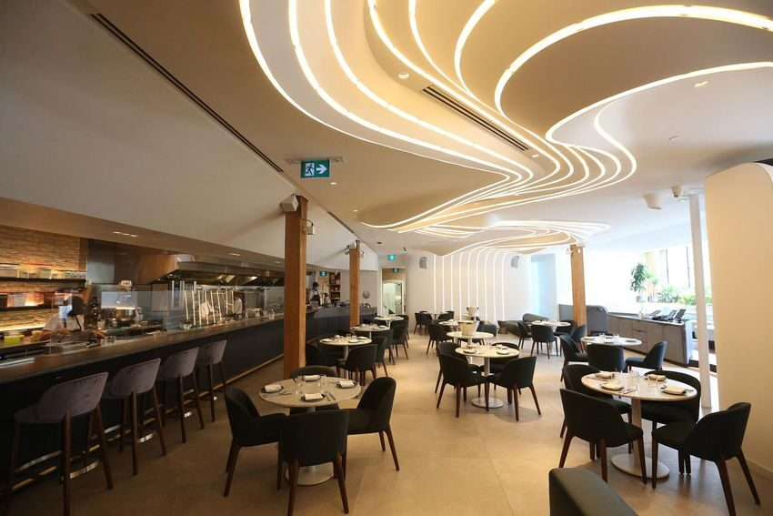
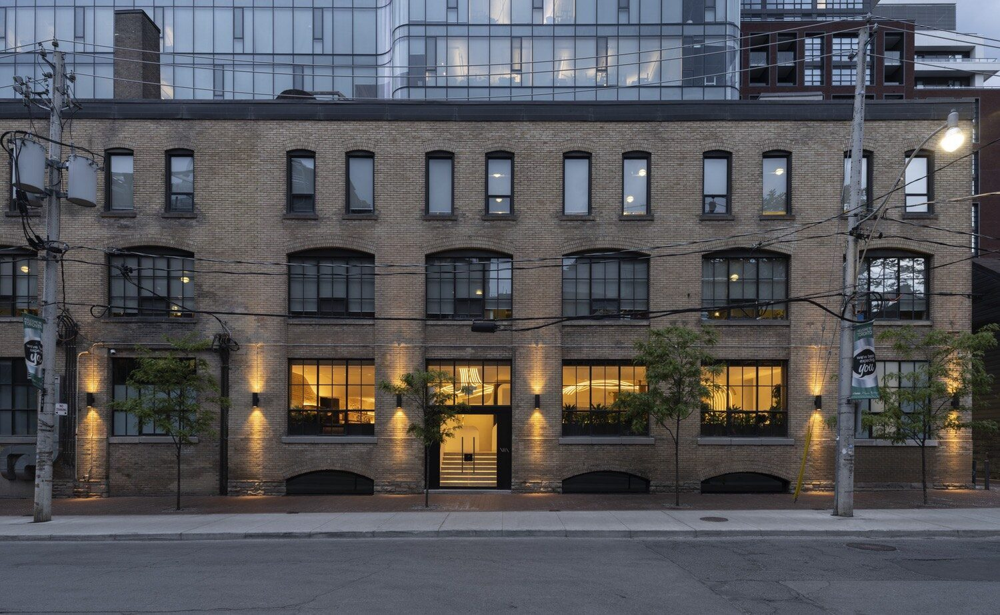
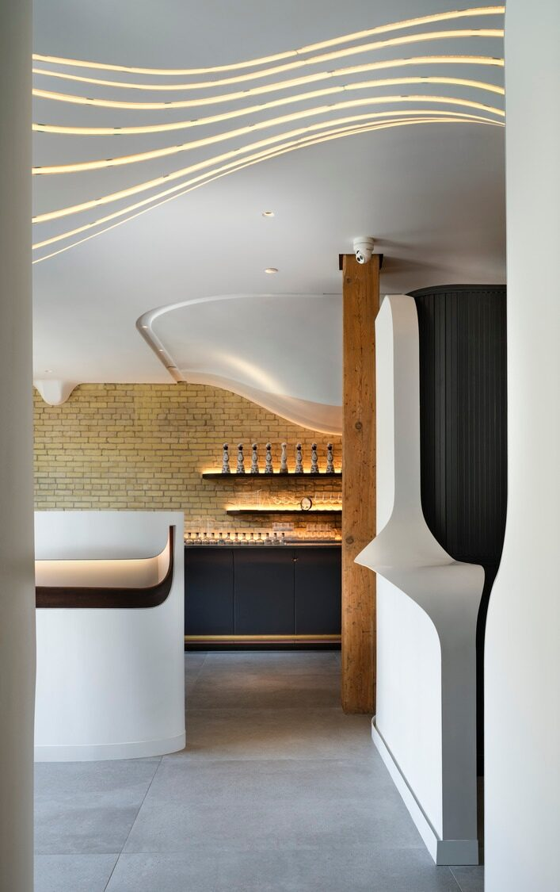
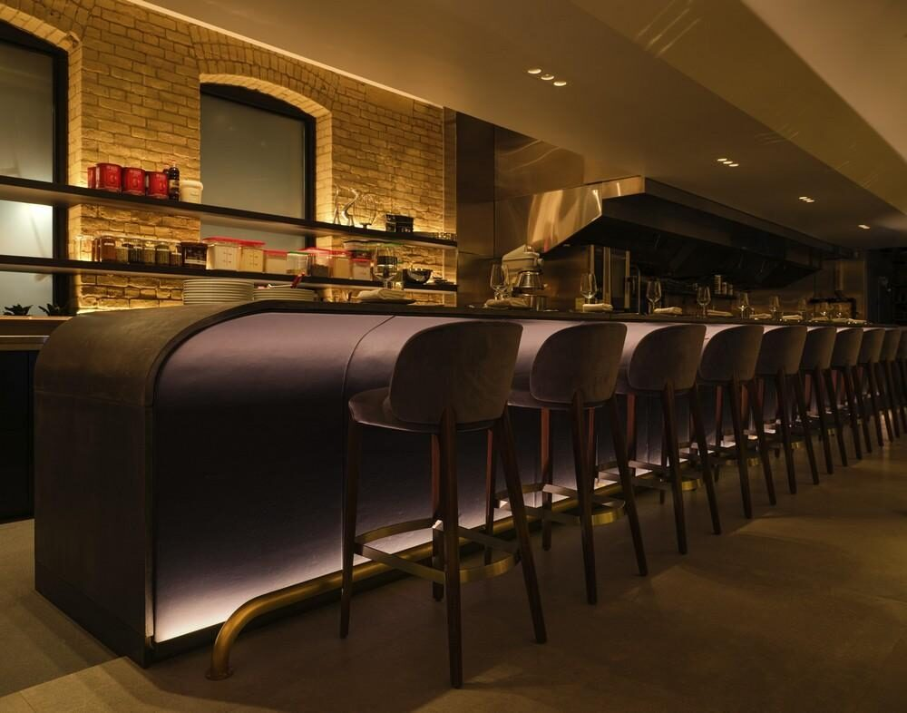
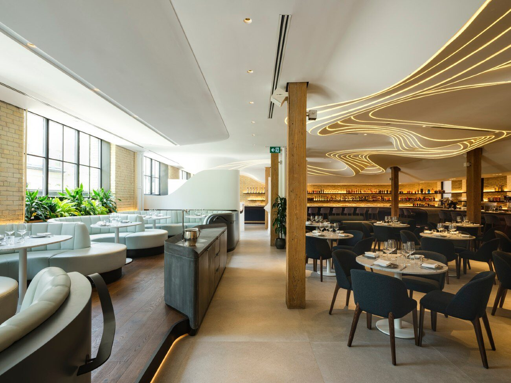
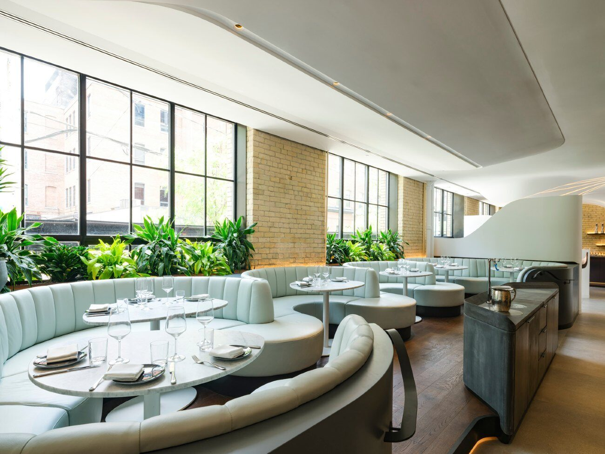
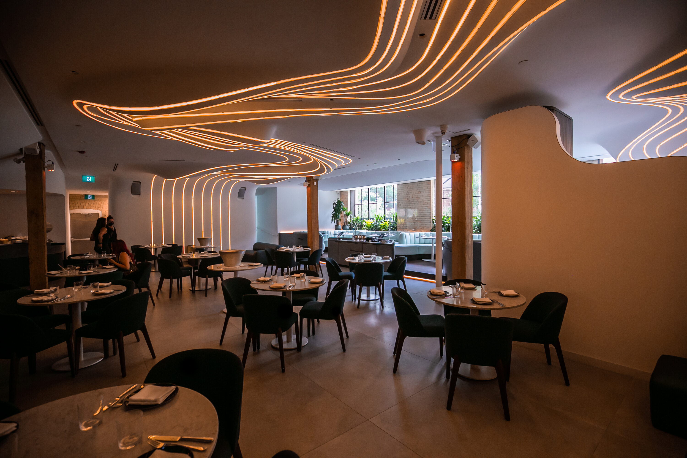
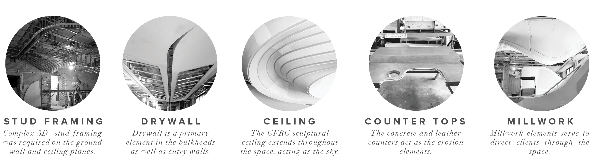
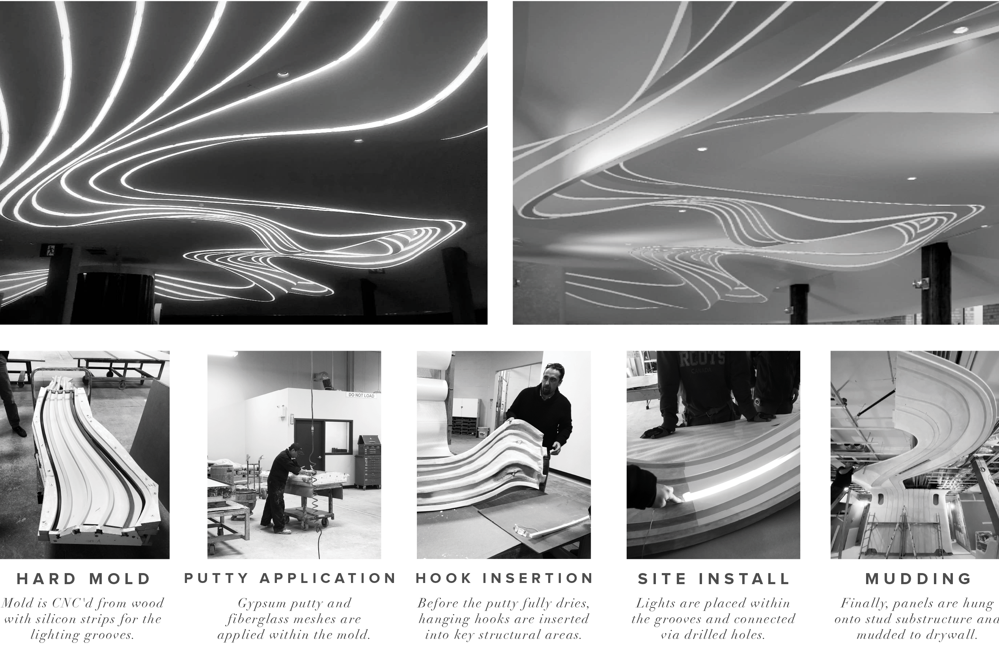
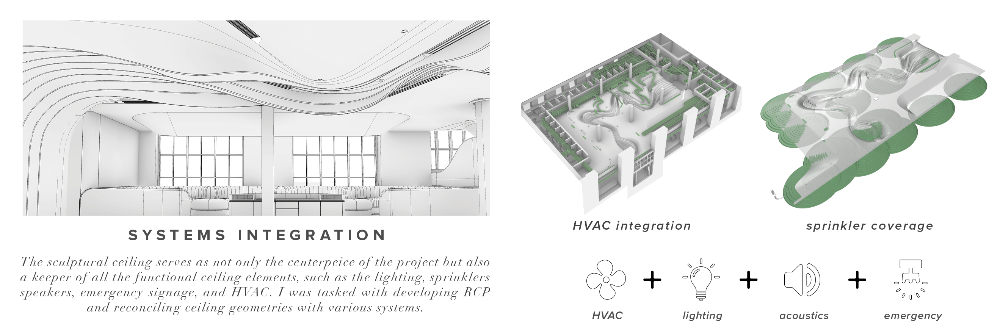
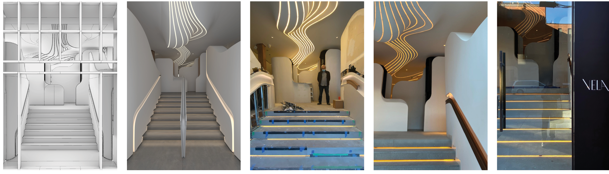
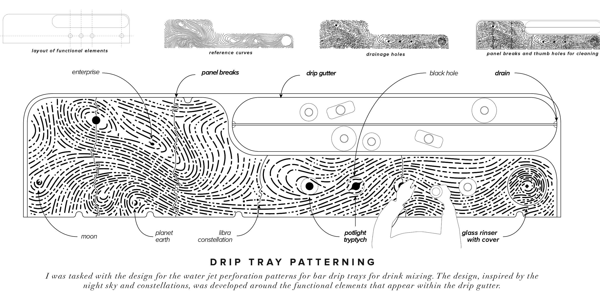